1.Signing in & two-factor authentication
Staff sign in at studiocenterauditions.com with their username and password, the same way clients do (see the client guide).
Turning on two-factor authentication (2FA)
Admins and producers can protect their accounts with a code from an authenticator app (Google Authenticator, 1Password, and so on).
- Open Account security (
/admin/account/security) and click Enable two-factor authentication. - In your authenticator app, add an account and enter the secret shown (or paste the
otpauth://link if your app accepts one). - Type the 6-digit code from the app into Verification code and click Confirm and enable.
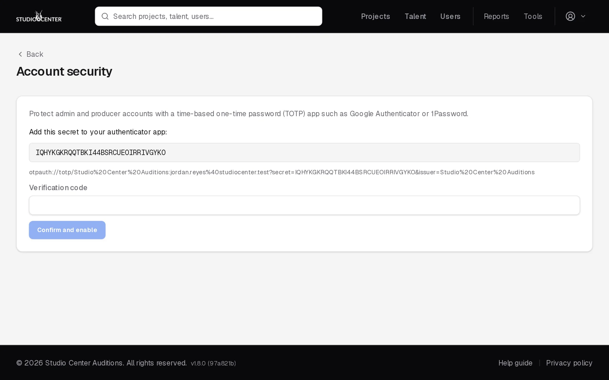
From then on, after your password you'll be asked for an Authentication code. Once verified, that browser won't ask again for 12 hours. To turn 2FA off, use Disable 2FA on the same page.
2.The dashboard
Your home page after signing in: what needs attention today.
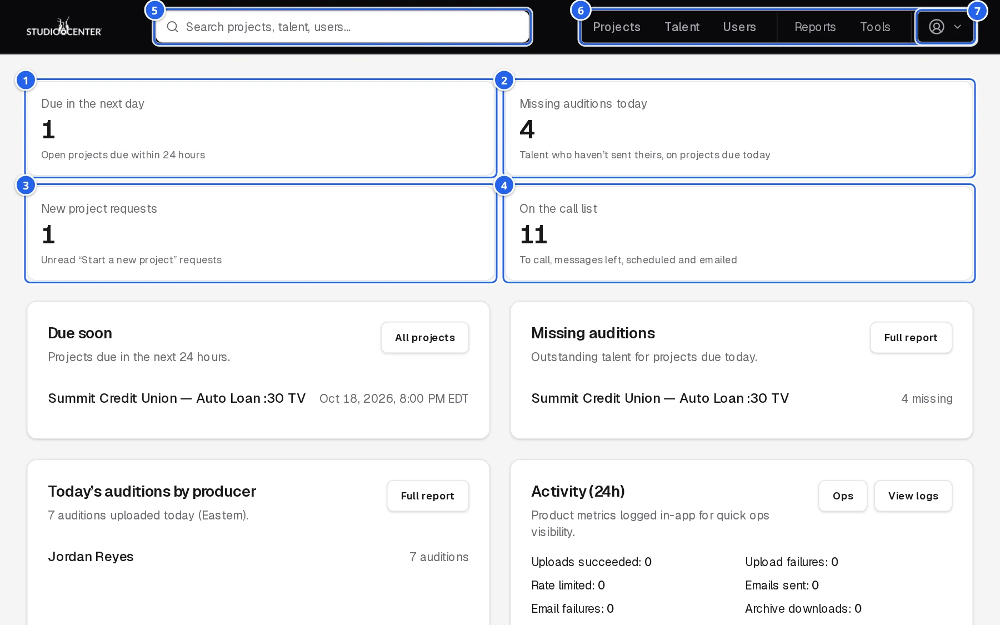
- 1Due within 24h: open projects nearing their deadline.
- 2Missing auditions today: talent still outstanding for projects due today.
- 3New project leads: unread new-project requests from clients.
- 4Call list pressure: talent waiting to be called, messaged, scheduled, or emailed.
- 5Search projects, talent, and users from any page.
Below the cards: projects due soon, missing auditions, today's auditions by producer, recent activity, coordinator stats, and the call list, each with a link to the full report or tool.
3.The projects list
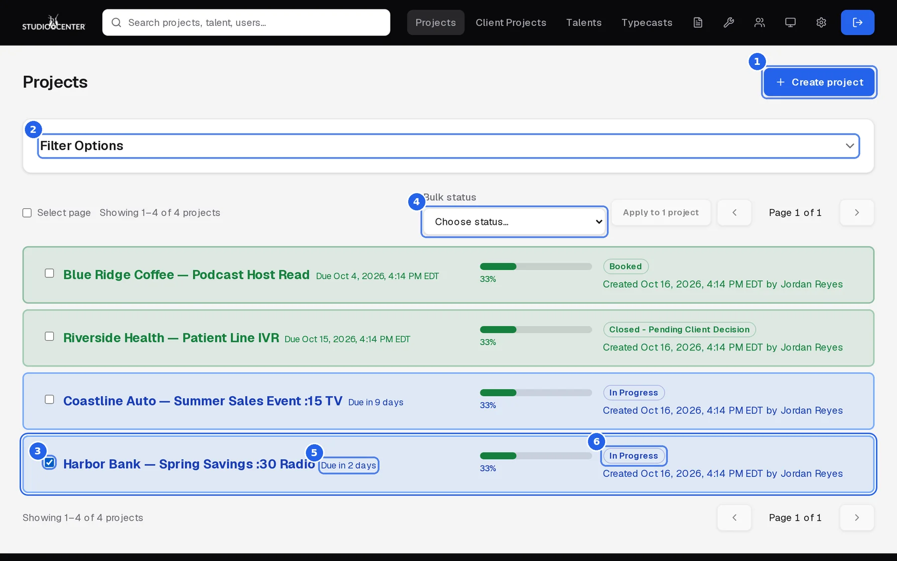
- 1Create project (see section 4).
- 2Filter Options: status, owner, dates, search, sort order, and page size.
- 3Select projects (or Select page) to change several at once.
- 4Bulk status: appears once something is selected; pick a status, then Apply.
- 5Due: “Due in 2 days”, “Due today”, or “Overdue by…” for open projects; hover for the exact time.
- 6Status.
Row colors
Each row's color shows its status at a glance:
| In Progress | Collecting auditions. |
| Overdue | In progress and past its due time. |
| On Hold | Paused. Projects set to No Sounders – Approved are amber too. |
| Booked / Closed – Pending Client Decision | Casting finished. |
| Canceled | Canceled. |
| ReAuditioned / Dead | Replaced by a new project, or abandoned. |
4.Creating a project
Creating a project takes two steps: the project details, then the talent.
Step 1: project details
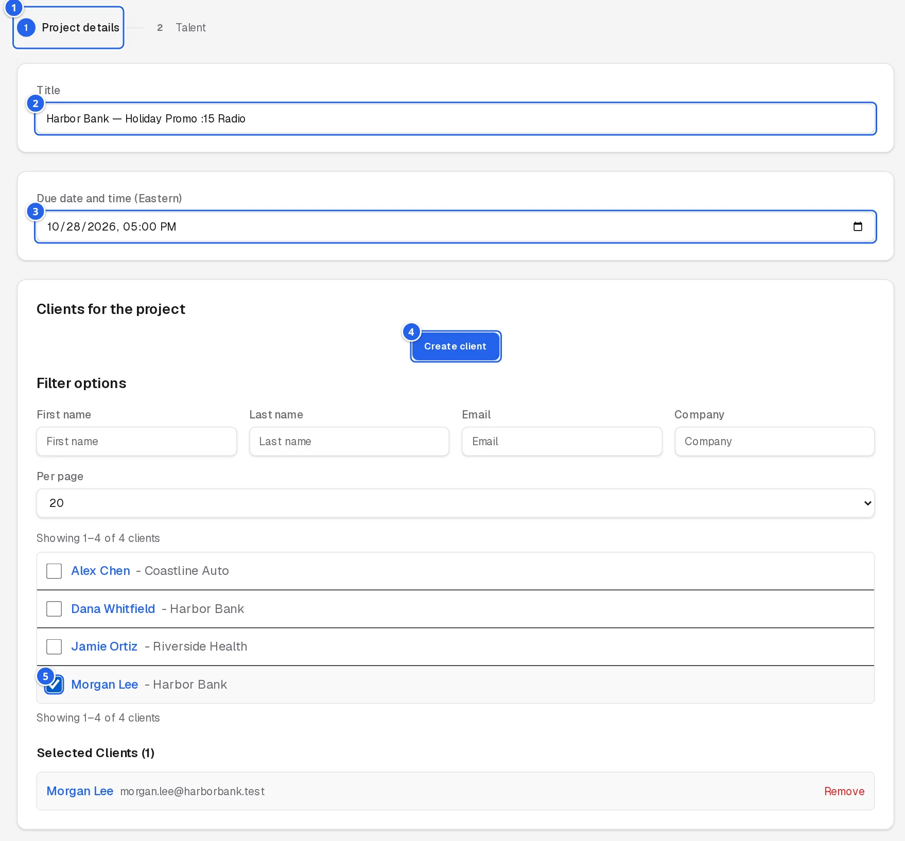
- 1Title: client and spot, e.g. “Harbor Bank — Holiday Promo :15 Radio”.
- 2Due Date/Time: the audition deadline (Eastern time).
- 3Create Client if the client doesn't have an account yet.
- 4Tick the clients who should see this project. Use the filters to find them.
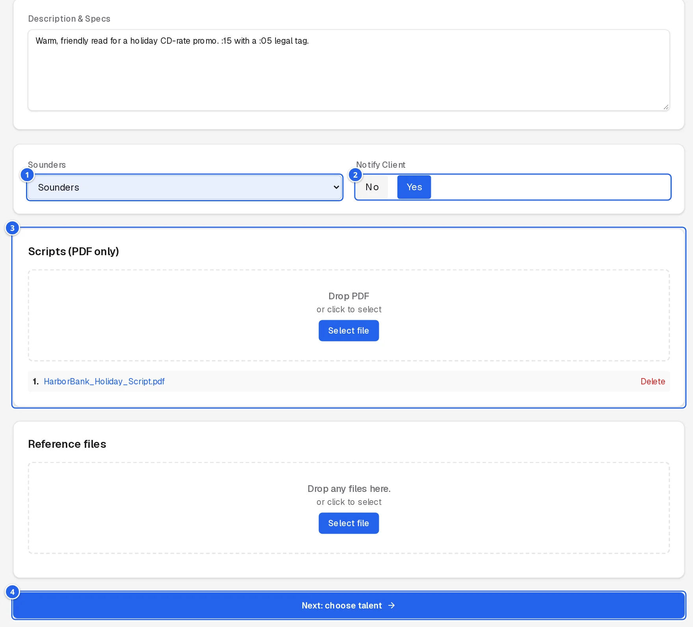
- 1Notify Client: Yes sends the clients the opening email when the project is created.
- 2Scripts: drop the script PDF here. A script is required to continue.
- 3Next Section: on to talent.
Above these, write the Description & Specs (what talent and clients need to know) and choose the Sounders setting. Add any Reference Files (any file type) below the scripts.
Step 2: talent
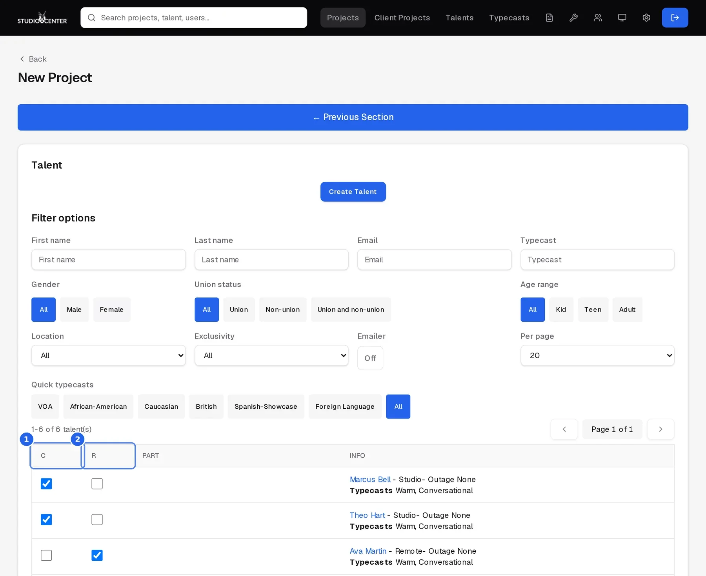
- 1C (Cast): add the talent to the project.
- 2R (Requested): mark talent the client asked for by name.
Filter by name, gender, union status, age, location, typecast, and more to find the right voices. Add a Part (e.g. Lead, Announcer) for each. Then click Create Project at the bottom; Previous Section goes back to the details.
What happens when you create it
- Each cast talent gets the audition request by email, and their status becomes Emailed.
- The team is notified of the new project.
- With Notify Client: Yes, the clients get the opening email with their sign-in details.
5.The project page
Everything about one project. Use the On this page links to jump between sections.
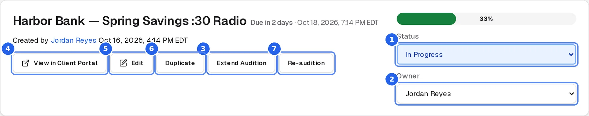
- 1Status: changing it is logged in the notes. Choosing Canceled asks first and notifies the people involved.
- 2Owner: the producer responsible (admins can reassign).
- 3Extend Audition: move the deadline (below).
- 4View in Client Portal: see exactly what the client sees (opens a new tab).
- 5Edit the title, description, and due date.
- 6Duplicate: copy the project to start a similar one.
- 7Re-audition: start a new project based on this one.
Extending the deadline
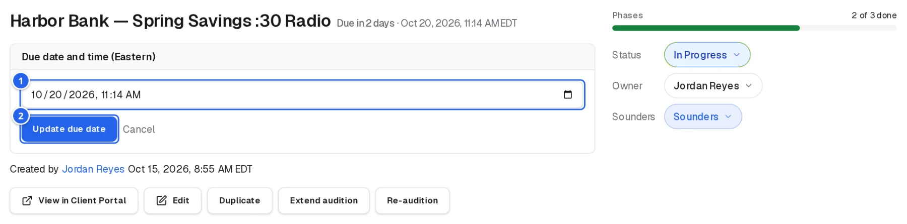
- 1Pick the new date and time.
- 2Update Due Date: the change is added to the notes and emailed to you as a record. If the project was Closed – Pending Client Decision, this reopens it to In Progress.
6.Notes
Internal notes for the team. Status changes, emails sent, and deadline changes are added here automatically, so the notes double as the project's history.
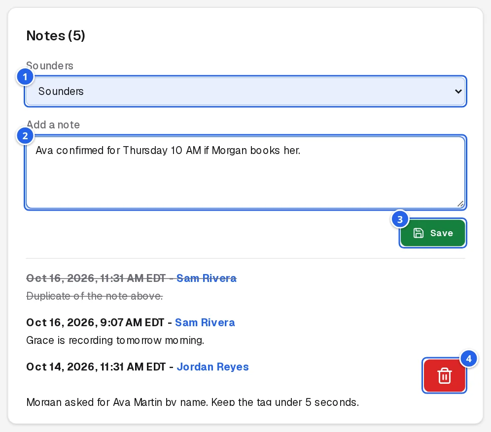
- 1Sounders setting for the project.
- 2Type a note…
- 3…and Save.
- 4Delete a note (it stays visible, crossed out).
Notes from clients appear separately under Client Notes.
7.Scripts & reference files
Open Scripts or Reference Files on the project page and drop files in (or click to browse). Scripts are PDFs; reference files can be anything (spec sheets, previous spots, pronunciation guides). Each file can be downloaded or deleted from its row.
8.Posting auditions
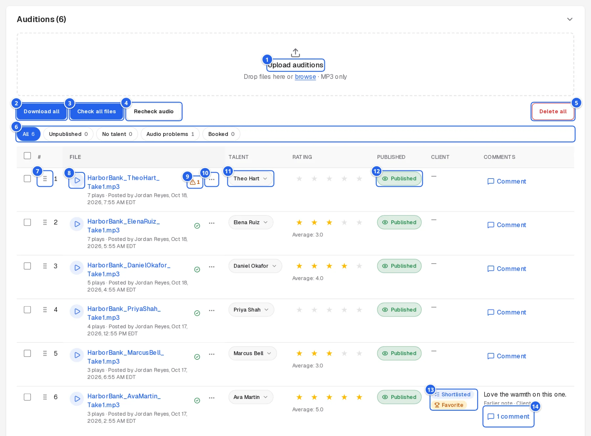
- 1Upload auditions: drop MP3 files here, or click browse. Several at once is fine.
- 2Download All: every take as a zip.
- 3Check All Files: confirms each file is really there. Takes that fail are hidden from clients until fixed.
- 4Delete All: removes every take (asks first).
- 5Rename a take's file.
- 6Delete one take (asks first).
- 7Talent: who recorded it. The app matches takes to cast talent from the file name; if it shows ⚠ Talent Not Assigned, pick the talent here.
- 8Published: only published takes appear in the client portal.
When a take is assigned to a talent, their status on the project changes to Posted automatically. The table also shows plays, the clients' average rating, whether the take is booked or favorited, and the client's note on it.
9.Talent on a project
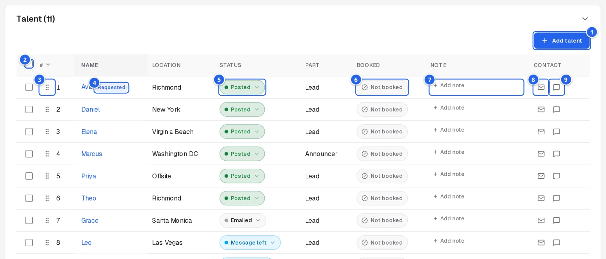
- 1Status: where each talent is in the process (below).
- 2Email talent: sends the audition email now (asks first).
- 3Text talent: sends the audition request by SMS.
- 4Booked: tick when the talent is booked.
- 5Note about this talent on this project; click the green button to save.
Talent statuses
| Cast | On the project, not contacted yet (shows under Talent to Call on the call list). |
| Emailed | Audition request sent by email. |
| Message left | Called and left a message. |
| Scheduled | Booked in to record. |
| Out | Unavailable. |
| Received needs to be posted | Audition received; post it. |
| Posted | Audition posted (set automatically when a take is assigned). |
| Not Posted (Bad Read) | Received but not usable. |
| Missed / Canceled | Didn't make the deadline, or dropped. |
Adding talent
Open Edit Talent at the bottom of the section. Search and filter the roster, then tick C to cast or R to mark as requested, as when creating a project. New talent can be added with Create Talent.
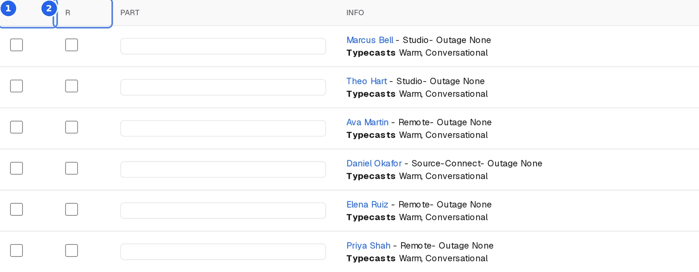
- 1C: cast on this project.
- 2R: requested by the client.
10.Clients & client emails
Main Clients are the people who review the project in the portal. Send them the standard emails from here:
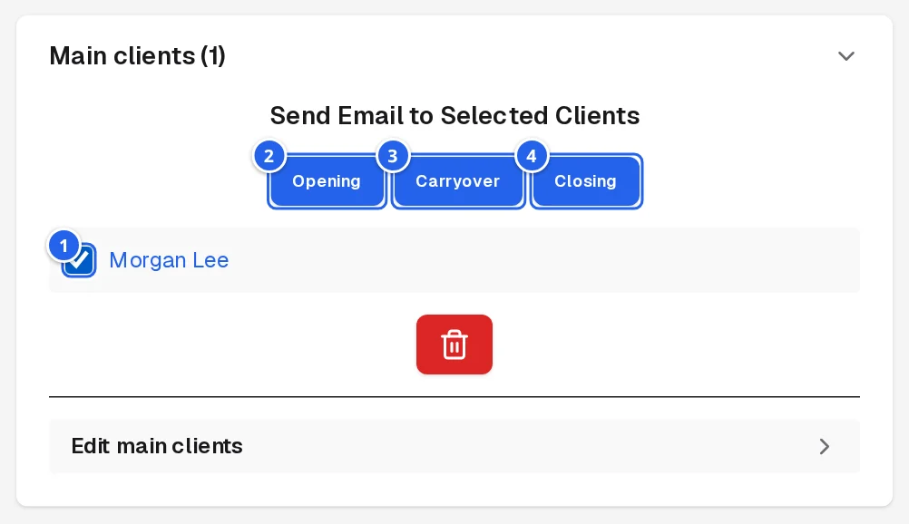
- 1Tick the clients to email.
- 2Opening: the project has started, with their sign-in details.
- 3Carryover: auditions are uploaded and ready, with sign-in details.
- 4Closing: casting is closed; thanks for their business.
Each email asks for confirmation before sending and is recorded in the activity log. Use Edit Main Clients to add or remove clients. Additional Clients lists other people who can see the project; manage them with Edit Additional Clients.
11.Phases
Track the project's progress through Casting, Talent Notification, and Posting and Publishing. Set each phase's status and end date; the progress bar at the top of the project page follows along.
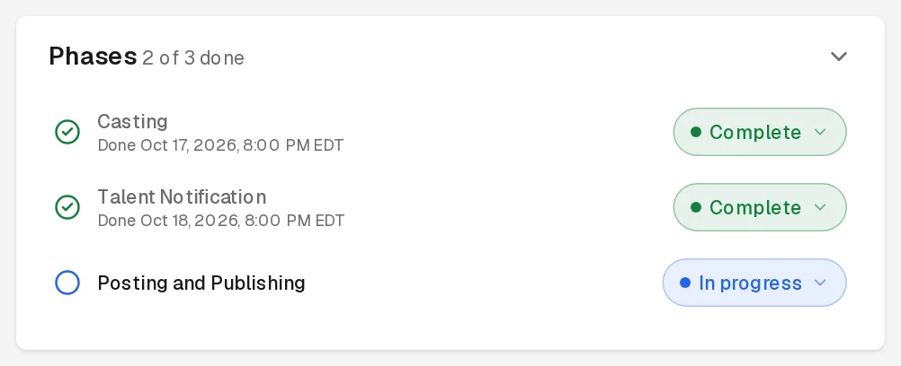
12.Talent roster & typecasts
Talents in the top bar lists every voice on the roster. Filter by name, gender, union status, age, location, exclusivity, and typecast; open a talent to see their details, projects, and history. Create talent adds someone new; Export CSV downloads the filtered list; Add page to project casts everyone on the current page onto a project.
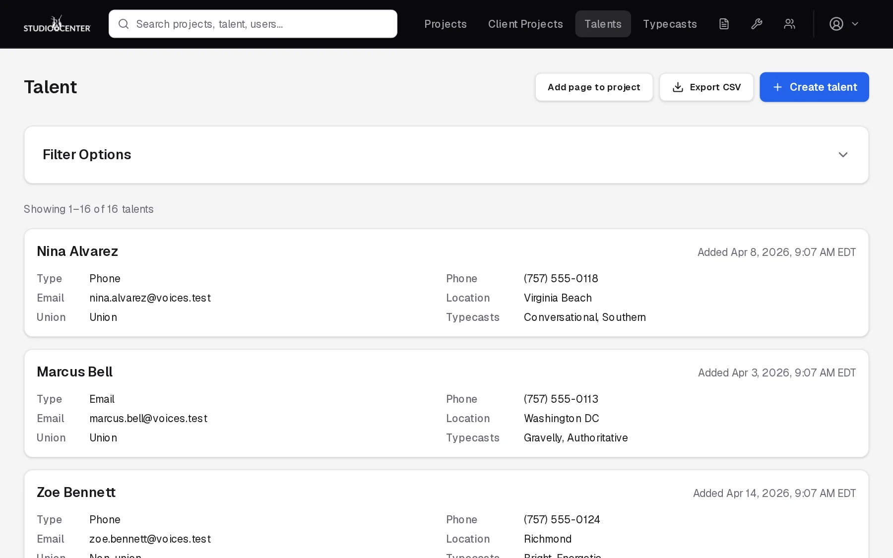
Typecasts are the tags used to describe voices (e.g. Warm, Conversational, British). Manage them under Typecasts in the top bar; they appear as filters throughout the app.
13.Tools
The wrench icon in the top bar opens the tools:
| Call List | Talent across open projects, grouped as Talent to Call (Cast), Messages Left, Already Scheduled, and Emailed. |
| Email / SMS Talent | Send an email or text to a filtered group of talent. Save filters you use often. |
| New Project Form Submissions | New-project requests from clients. Opening one marks it read. |
| Talent Import / Typecast Import | Bulk-add talent or typecasts from a file. |
| Backup & Delete Projects | Archive old projects and their files, restore a backup, or delete permanently. |
| Logs / Ops dashboard | System activity and health, for admins. |
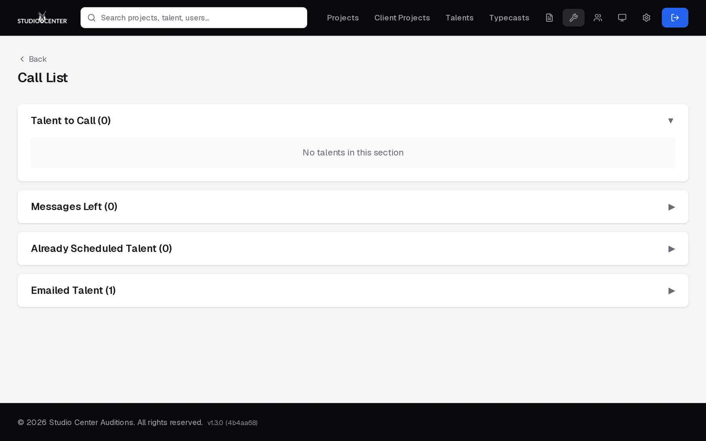
14.Reports
The document icon in the top bar opens the reports: Auditions Booked, Auditions Per Producer, Assigned Producer Report, ISDN Source Connect List, and Missing Auditions (talent who haven't submitted for projects due today).
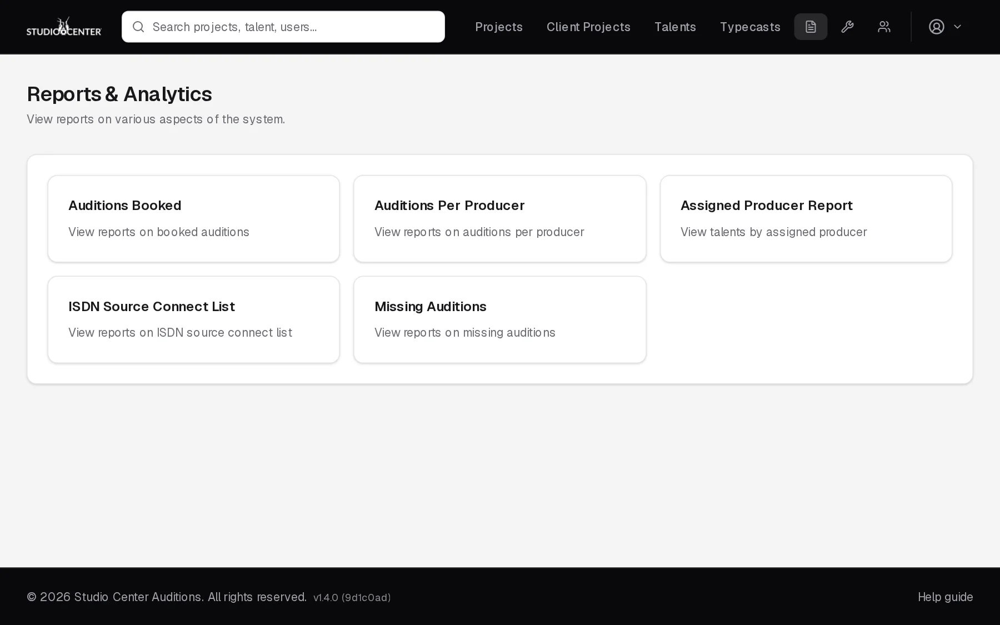
15.Automatic emails
The app sends these on its own, in Eastern time:
| When | To | |
|---|---|---|
| Pre-close summary | About 2 hours before a project is due | The project owner, copied to the team: who's posted, not called, not posted, and out. |
| Main clients check | At :01 and :31 past each hour, for projects due within 30 minutes that have no main clients | The project owner. |
| Missing auditions | Monday to Friday at 4:00 PM and 9:30 PM | The team: talent still outstanding. |
| Booking confirmation | When a client books takes | The client, copied to the owner and the team. |
| Client notes | When a client saves a project note | The team. |